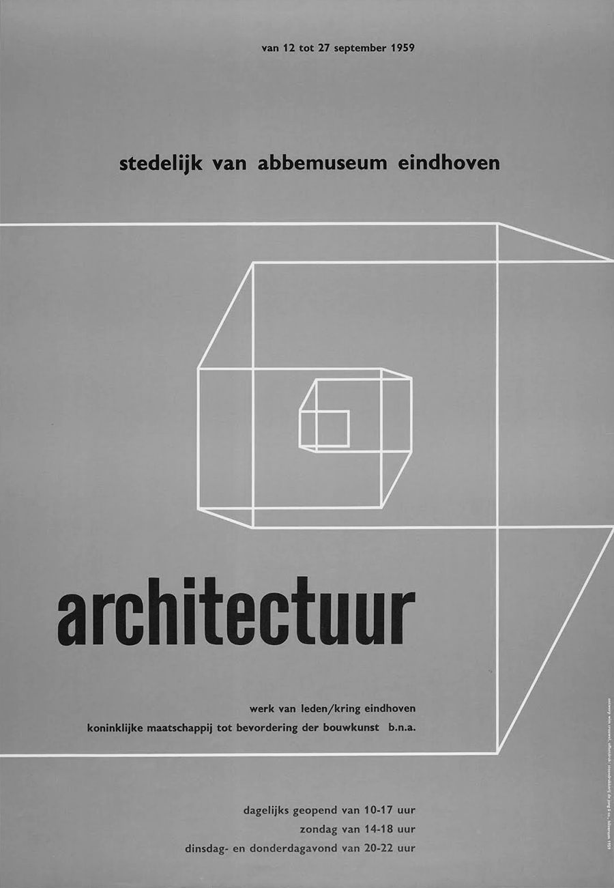

On nous rapporte que le hall du musÉe Fodor d’Amsterdam dans lequel se situe la scÈne, le 9 novembre 1972 en soirÉe, est « enfumÉ, bruyant et bondÉ », que l’auditoire rassemblÉ se fait entendre par de « frÉquentes vocifÉrations ». Le centre de cette arÈne fiÉvreuse est la rencontre de deux graphics designers, de deux graphistes, de deux typographes, Wim Crouwel et Jan Van Toorn, dans un pays oÙ leur voix porte, oÙ leur pensÉe est importante. Une rencontre, une conversation, ou plutÔt une confrontation, une controverse, un dÉbat selon le terme qui lui sera consacrÉ, qui caractÉrise les reprÉsentations de notre discipline dans les annÉes 1980 et qui pourrait avoir encore quelque Écho aujourd’hui. Car on a pu voir dans cet Échange parfois Âpre l’illustration assez synthÉtique des grandes polarisations de la thÉorie du graphisme, de la typographie, du design graphique. La mÉdiation de service contre l’Écriture d’interprÉtariat. La planification ingÉnieriale contre l’invention artistique L’ordonnancement contre le vivifiant. La technique et la critique. La distance et l’implication. La commande et la responsabilitÉ. Le commerce et le politique. L’objectif et le subjectif. L’Écrivant et l’Écrivain. L’artiste, l’artisan, le designer, le scientifique. Le texte et l’image. L’auteur, le cercle des lecteurs. L’Élite, le public. La beautÉ, la connaissance, l’expÉrience de lecture.
J’ai de nouveau lu ce que vous avez Écrit en […] 1961 […].
La premiÈre chose que vous dites À propos du design
est que la forme est dÉterminÉe par le contenu. Mais dans
le reste de ce court article, je ne lis pas un seul mot sur
la relation entre la forme et le contenu, mais beaucoup
de choses sur les options formelles, les techniques et
la technologie, donc sur les moyens en gÉnÉral.
Jan van ToornJan van Toorn, in The Debate, op. cit., p.23.
Je dis À [mes ÉlÈves]: « Avant tout, assurez-vous de savoir
ce que vous faites. Si cela est incompatible avec ce que vous aspirez À faire, sortez-en dÈs aujourd’hui et lancez-vous plutÔt dans des Études comme la science politique, la philosophie
ou la psychologie; ou allez faire de la politique, car lÀ,
vous avez beaucoup plus d’influence sur les gens et vous pouvez rÉaliser tout ce À quoi vous aspirez plus rapidement qu’au travers de notre vocation [du design graphique] »[…] Je ne suis pas un politicien, et j’ai pris la dÉcision consciente de rester loin de ce monde. J’adore mon mÉtier et j’essaye d’apporter une contribution depuis cette place-lÀ.
Wim CrouwelWim Crouwel, ibid. , p. 41-42.
Vous imposez votre design aux autres et nivelez tout. Vous Étiez aux commandes [de l’expression typographique], et maintenant notre pays est inondÉ pardes vagues de marques commerciales et de chartes graphiques et tout se ressemble. […]
Votre approche consiste essentiellement À confirmer les modÈles existants. Cela ne sert pas la communication – cela conditionne le comportement humain.
Jan van ToornIbid., p.26.
Je crois qu’en tant que designer je ne dois jamais
m’interposer entre le message et son destinataire.
J’essaie plutÔt de prÉsenter les choses avec autant
de neutralitÉ qu’il est possible.
Wim CrouwelIbid. , p.22.
En donnant la mÊme rÉponse de conception À toutes
les situations, vous produisez un travail d’une grande
uniformitÉ dans lequel tout sens d’identitÉ est perdu.
Jan van ToornIbid.
Je dis que le design graphique consiste en un processus d’ordonnancement des choses au profit de la clartÉ
et de la transparence de l’information.
Wim CrouwelWim Crouwel, in The Debate, op. cit. , p. 33.
Je pense qu’un design graphique de spÉcialisation, tout
comme les autres formes de design, a commencÉ À Échouer sous la pression des dÉveloppements industriels dans notre sociÉtÉ et de toutes leurs consÉquences.
Le concepteur Échoue non seulement parce que, par son utilisation de la forme, il programme plutÔt qu’il n’informe,
mais aussi parce qu’il ne remet plus en question ses objectifs
et sa responsabilitÉ. Son design influence et conditionne les utilisateurs, plutÔt qu’il ne « soutient » son contenu.
Jan van ToornIbid., p.22.
Lorsque vous dites que mon approche est technologique et que vous observez que je parle constamment de technologie,
c’est un effet de mon goÛt pour la technologie.
Wim CrouwelIbid., p.22.
Je ne crois pas qu’un designer puisse adopter, comme vous le dites, la position d’un « intermÉdiaire neutre ». Les actes que vous accomplissez ont lieu À travers vous et vous Êtes un lien subjectif.
Jan van ToornIbid., p.22.
J’ai une grande affection pour les artistes, mais en lniÊme temps je ne prÉtends pas en Être un – je n’ai pas autant de libertÉ qu’un artiste. De nombreux designers vivent avec le dilemme
de vouloir Être un artiste visuel plutÔt qu’un bon designer.
Wim CrouwelWim Crouwel, in The Debate, ibid., p. 32.
Le double devoir du messager, le concepteur-designer, est de transmettre le contenu sans interfÉrer avec lui. D’un autre cÔtÉ, il y a l’apport et la subjectivitÉ incontournables du designer. Vous ne pouvez pas nier cette dialectique, et vous devriez plutÔt la voir comme un avantage.
Jan van ToornIbid., p.25-26.
Dans vos catalogues du Van Abbemuseum, je reconnais avant tout la voix de Jan van Toorn, tandis que celle de l’artiste ne devient perceptible que si j’y mets du mien. En tant qu’« oeuvres d’art », ce sont de grandes contributions À ce qui est actuellement possible dans le champ de la typographie libre, mais elles sont carrÉment illisibles. On y est enlisÉ.
Wim CrouwelIbid., p.36.
Le designer doit aborder sa vocation sous l’angle de
l’artiste comme de l’origine de son mÉtier, et sous un angle industrialo‑technologique.
Jan van ToornJan van Toorn, ibid., p.28.
Lorsqu’un designer travaille pour un parti politique ou veut promouvoir ses propres convictions politiques, il y va de maniÈre trÈs subjective, car il choisit alors une perspective. […]
Cela implique qu’un concepteur ne doit effectuer que
des travaux avec lesquels il est entiÈrement en accord. […]
Mais alors vous courez le risque de vous retrouver avec
une gamme assez restreinte de missions.
Wim CrouwelIbid., p.26-27.
Mon calendrier pour Spruijt est une expÉrimentation et une chose À regarder, pas une chose À lire. Il est ordonnÉ, mais
d’un ordre tordu. Vous continuez de sentir que quelque chose s’y passe […]. En typographie, vous serez peut-Être moins enclin À enfreindre les rÈgles car il y en a tellement. Mais dans les beaux-arts, des expÉriences ont ÉtÉ rÉalisÉes pendant des siÈcles, et peut-Être devrions-nous tirer davantage de profit
de cette tradition et nous en inspirer davantage.
Jan van ToornIbid., p. 31.
De mon point de vue, deux approches guident notre travail et je voudrais ici les clarifier. Le designer A, qui privilÉgie l’approche analytique pour arriver au message le plus objectif, sera enclin
À n’utiliser que des moyens Éminemment testÉs et ne sera pas frÉquemment tentÉ d’expÉrimenter dans un souci de nouveautÉ. Pour cette raison, il court Également le risque d’une production qu’on peut caractÉriser par une certaine sÉcheresse.
En revanche, le designer B est plus susceptible d’utiliser des moyens À la mode, et il ne rejettera pas l’expÉrience afin d’arriver À des rÉsultats inÉdits. De plus, le designer A aura tendance À se positionner de maniÈre professionnelle, sans trop « envelopper » son sens des responsabilitÉs vis-À-vis de la sociÉtÉ.
[Mon travail] observe, mÉmorise, improvise, varie, joue :
il dÉconnecte les ÉlÉments et les re-connecte dans un nouveau contexte. Il laisse ouvertes toutes les options d’interprÉtation,
il nous invite À rÉflÉchir, À travailler, À ajouter, À complÉter.
Jan van Toorn
Il s’abstiendra par exemple de s’engager dans des spÉcialitÉs qui ne sont pas les siennes. À travers son travail spÉcifique,
il contribuera À l’articulation d’un problÈme. Je pense que le designer B, sur la base de son large sens des responsabilitÉs envers la sociÉtÉ, aura tendance À Être tellement absorbÉ
par les problÈmes posÉs qu’il s’avancera au sein de spÉcialitÉs qui ne sont pas les siennes. Qu’il court ainsi le risque de gaspiller son expertise en proposant en amateur une contribution
au problÈme donnÉ.
Wim CrouwelIbid, p.21-22.
La fonction d’un graphiste est de transmettre des informations. Mais de telle sorte que le lecteur ou le spectateur puisse en arriver À une vision qui lui soit propre, plutÔt que de lui imposer l’État d’esprit du messager.
Jan van ToornWim Crouwel citant Jan van Toorn, The Debate, op. cit. , p.25.
Je crains que, par exemple, une typographie standard, une typographie de livre, ne puisse Être rÉalisÉe par quelqu’un qui adopte une telle position subjective, car un livre ne deviendra jamais meilleur simplement par sa typographie. Jamais, au grand jamais.
Wim CrouwelIbid., p.27-28.
Au Van Abbemuseum, nous voulions faire les choses diffÉremment. Notre musÉe n’Était pas quelque chose qui devait Être vendu; l’enjeu rÉsidait dans un programme en Évolution fait par des gens. Cette politique, perceptible dans les expositions et les activitÉs du lieu, devait Être au centre de la scÈne, pas la question de l’institution.
Quand Jan dit que le design est une activitÉ subjective, il adopte – en tant que designer – le rÔle d’un intermÉdiaire.
Je suis pour ma part effrayÉ d’adopter un rÔle aussi subjectif,
et j’essaye plutÔt de prendre une position objective.
Wim CrouwelIbid., p.25
[…], nous [le directeur et moi] avions une conversation, si possible avec des artistes – une discussion commune dans laquelle on ne me dit pas comment je dois faire quelque chose, mais dans laquelle nous examinons les considÉrations historiques qui devraient figurer dans le catalogue. Il s’agit de rechercher et d’identifier collectivement une prÉoccupation À laquelle j’essaie ensuite de rÉpondre, en utilisant les outils de ma profession.
Jan van ToornJan van Toorn, in The Debate, op. cit. , p. 37.
En tant que typographe, vous n’avez qu’À simplement organiser les informations clairement de maniÈre À les transmettre dans une forme facilement lisible.
Wim CrouwelWim Crouwel, in The Debate, op. cit., p. 34.
Le dÉveloppement de ma pratique du design est parti d’un idÉal, d’une utopie qui me guide. L’idÉe qu’il est nÉcessaire de crÉer
un sens de l’ordre au milieu de l’immense chaos visuel
du monde – et telle est, selon moi, la tÂche premiÈre
des designers. Je crois que Rietveld a dit un jour :
« Ce qui est semblable chez l’homme est plus important que ce qui le rend diffÉrent. »
Toute votre expÉrience visuelle vous crie qu’il faut combattre l’expression personnee […] crÉer autant que possible pour l’interprÉtation À partir d’un minimalisme radical, favoriser le calme visuel[…]. Cela a marquÉ le dÉbut de ce que nous appellerions plus tard la charte graphique.
Wim Crouwel
Lorsque je m’Éloigne des structures modulaires, c’est pour moi un principe sous-jacent. […] Je pense que le design – pas seulement le design graphique, mais aussi le design spatial, l’architecture et le design industriel – bÉnÉficient d’une approche cellulaire, d’une approche trÈs structurelle.
Wim CrouwelIbid., p.33.
On nous rapporte que le hall du musÉe Fodor d’Amsterdam dans lequel se situe la scÈne, le 9 novembre 1972 en soirÉe, est « enfumÉ, bruyant et bondÉ », que l’auditoire rassemblÉ se fait entendre par de « frÉquentes vocifÉrations ». Le centre de cette arÈne fiÉvreuse est la rencontre de deux graphics designers, de deux graphistes, de deux typographes, Wim Crouwel et Jan Van Toorn, dans un pays oÙ leur voix porte, oÙ leur pensÉe est importante. Une rencontre, une conversation, ou plutÔt une confrontation, une controverse, un dÉbat selon le terme qui lui sera consacrÉ, qui caractÉrise les reprÉsentations de notre discipline dans les annÉes 1980 et qui pourrait avoir encore quelque Écho aujourd’hui. Car on a pu voir dans cet Échange parfois Âpre l’illustration assez synthÉtique des grandes polarisations de la thÉorie du graphisme, de la typographie, du design graphique. La mÉdiation de service contre l’Écriture d’interprÉtariat. La planification ingÉnieriale contre l’invention artistique L’ordonnancement contre le vivifiant. La technique et la critique. La distance et l’implication. La commande et la responsabilitÉ. Le commerce et le politique. L’objectif et le subjectif. L’Écrivant et l’Écrivain. L’artiste, l’artisan, le designer, le scientifique. Le texte et l’image. L’auteur, le cercle des lecteurs. L’Élite, le public. La beautÉ, la connaissance, l’expÉrience de lecture.